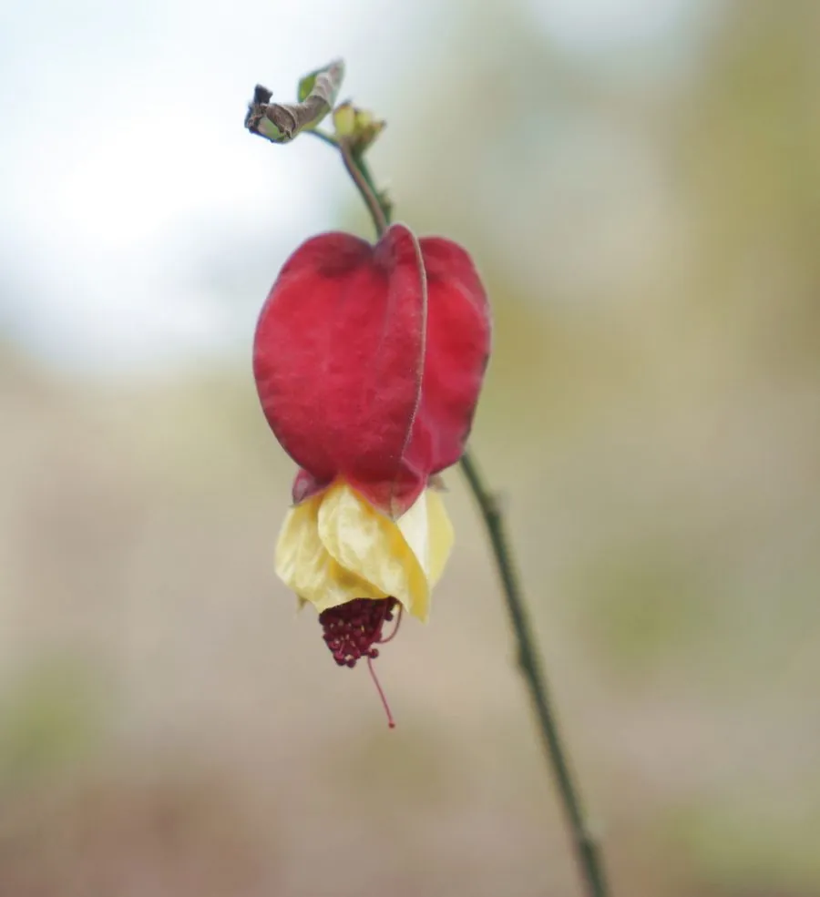

灌木与花木 · 植物界
红萼苘麻 Abutilon megapotamicum

锦葵科苘麻属常绿灌木，花梗细长下垂，红色花萼包裹黄色花冠，形似小灯笼，是南方庭园中的垂吊观花植物。
- 分类
- 门被子植物门纲木兰纲目锦葵目科锦葵科属苘麻属
- 栖息环境
- 巴西南部亚热带林缘，喜温暖湿润、阳光充足
- 地理分布
- 原产巴西、阿根廷；中国华南、西南及世界温暖地区栽培
- 保护级别
- IUCN 暂无评估；栽培广泛，野生种群未受明显威胁
物种志
红萼苘麻为常绿灌木，高 1–2 米，枝条细长、拱形下垂。叶片卵状心形，长 5–10 厘米，边缘具浅齿，掌状脉明显。花单生叶腋，花梗细长下垂，花萼红色、膨大呈灯笼状，花冠黄色，花瓣 5 枚，略短于花萼，雄蕊柱突出；蒴果成熟时开裂。
本种原产巴西南部与阿根廷北部，喜温暖湿润、阳光充足的环境，在中国华南、西南常作盆栽、垂吊或篱垣植物。它的红萼与黄冠对比鲜明，花梗细长，微风吹过像一串小灯笼轻轻摇动。红萼苘麻不耐寒，北方需温室越冬；生长期需充足水分与肥料，才能持续开花。其花蜜丰富，能吸引蜂类与蜂鸟。盆栽时宜置于光照充足的阳台，并保持盆土湿润。
形态与习性
- 株高1–2 米，枝条细长下垂
- 花期5–10 月，红萼黄冠
- 花径约 3–4 厘米，花梗细长
- 光照喜光，夏季适当遮阴
- 水分喜湿润，生长期需充足浇水
- 土壤疏松肥沃、排水良好的壤土
- 主要用途盆栽垂吊、篱垣与庭院观赏
趣味知识
- 红萼苘麻的红色部分其实是花萼，黄色部分才是花瓣。
- 它的花梗细长、花朵下垂，微风吹过像一串摇晃的小灯笼。
- 本种原产巴西，是苘麻属中少见的红花萼观赏种。
- 它喜欢温暖湿润，北方栽培需在温室越冬。